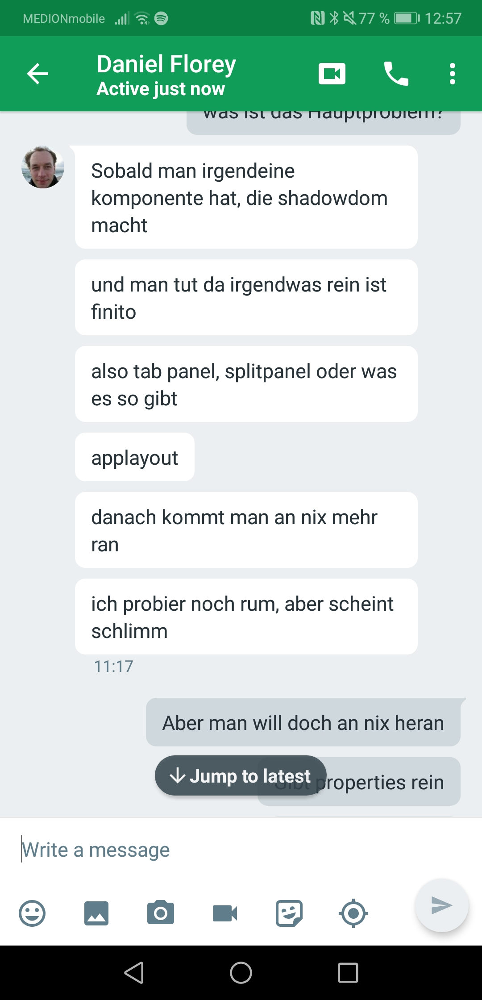

Web Components
Oliver Zeigermann
/
@DJCordhose
/
Slides:
TODO
### Constructible Stylesheets https://wicg.github.io/construct-stylesheets/ https://twitter.com/justinfagnani/status/1095059419857969152?s=03 https://twitter.com/justinfagnani/status/1093229305662889985?s=03
https://twitter.com/artursignell/status/1094964518852198400?s=03 https://labs.vaadin.com/project-wizard-connect/
### Lit Element Cheat Sheet https://twitter.com/sergicontre/status/1094678263912374273?s=03 https://twitter.com/sergicontre
### Open WC https://open-wc.org/ https://open-wc.org/building/building-webpack.html https://twitter.com/passle_/status/1094203096996159488?s=03
### Do we need a framework, would Web Components do? https://twitter.com/mislav/status/1022058279000842240
### Nils bei mir zieht ja das "standard" argument nicht, ich finde, wenn irgendwas mindestens "quasi-standard" bzw einigermaßen etabliert ist, kommt es für den Einsatz in Frage (gleiche Diskussion jee oder spring mE). Demnach wäre bei mir nicht nur WebComponents in der Verlosung, sondern eben auch Angular, Vue, React etc pp. Und dann würde ich überlegen, wie ich eigentlich Anwendungen bauen will, welche Features sind mir wichtig, wo gefallen mir API, Doku, Tooling etc. Das würde ich dann nehmen. Und ich persönlich finde, dass die WebComponents auf dem falschen "Level" abstrahieren bzw nicht genügend Features bieten (state handling etc). Das alles finde ich in react viel viel besser (vermutlich auch in Angular/Vue) und würde deswegen WCs nicht verwenden Ich finde Custom Elements schön und gut, aber die Art+Weise wie ich die entwickeln müsste, würde mir nicht gefallen
### Benchmark over Frameworks Justin Fagnani (@justinfagnani) tweeted at 9:27 PM on Tue, Feb 05, 2019: I'm really happy with where we've been able to keep (and improve on) lit-html performance while working around crazy bugs in browsers. Usual caveat that all benchmarks have problems, but in js-framework-benchmark we're beating almost all "well-known" libraries. https://t.co/VIhpWJkY1s (https://twitter.com/justinfagnani/status/1092882517709905921?s=03) </section>
### Web Components Live https://wiredjs.com/ https://roughjs.com/ </section>
### Web Components Theeming https://meowni.ca/posts/part-theme-explainer/ </section>
### Web Components 101 https://www.telerik.com/blogs/web-components-101-an-introduction-to-web-components </section>
### Web Components Compatibility <img src='img/web-components-support.jpg'> <small> https://www.webcomponents.org/ <br> https://caniuse.com/#search=Web%20components </small> </section>
### Frameworks with Custom elements https://custom-elements-everywhere.com/
Custom Elements with Angular, angular elements https://github.com/manfredsteyer/ngx-build-plus#advanced-example-externals-and-angular-elements https://github.com/manfredsteyer/ngx-build-plus
### lit-html, lit-element * change detection using comments: https://github.com/Polymer/lit-html/issues/748
### Web Components Daniel: * früher= browser lief vorweg, dann frameworks hinterher * heute umgekehrt Wieso gut? * access all browser dom api easily * Proposals: https://scotch.io/bar-talk/an-overview-of-the-most-exciting-proposals-for-the-web-platform-related-to-web-components/amp * Template instantiation: * https://scotch.io/bar-talk/an-overview-of-the-most-exciting-proposals-for-the-web-platform-related-to-web-components/amp#toc-template-instantiation-with-substituted-values * https://github.com/w3c/webcomponents/blob/gh-pages/proposals/Template-Instantiation.md * Constructable Stylesheet Objects * https://wicg.github.io/construct-stylesheets/ * https://github.com/WICG/construct-stylesheets/blob/gh-pages/explainer.md
### An Overview of the Most Exciting Proposals for the Web Platform Related to Web Components https://scotch.io/bar-talk/an-overview-of-the-most-exciting-proposals-for-the-web-platform-related-to-web-components/amp
### Shadow DOM might be be trouble - Do we need it at all?
### Style as a concept is global - but Shadom DOM makes everything local Passing layout properties over many layers using shadow DOM seems unfeasable 